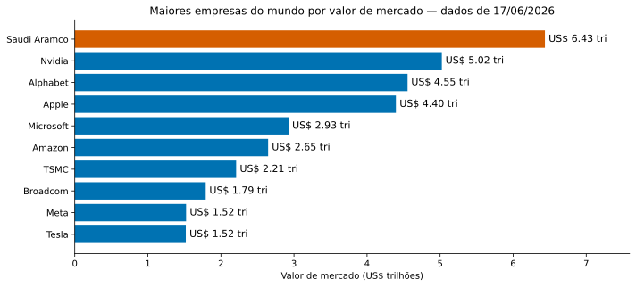
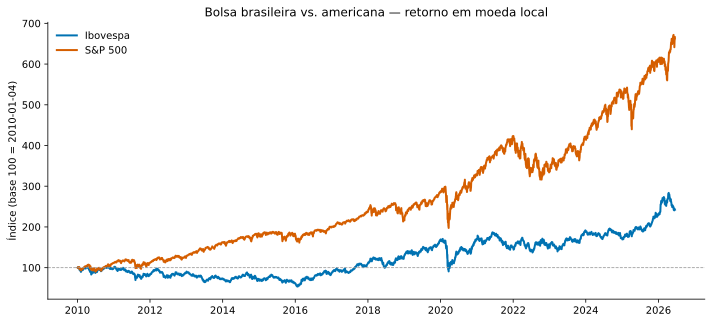
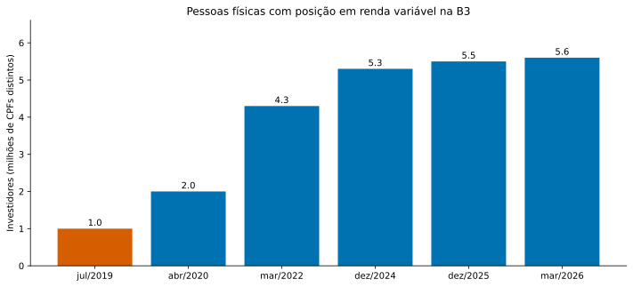
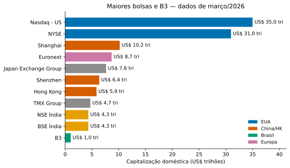
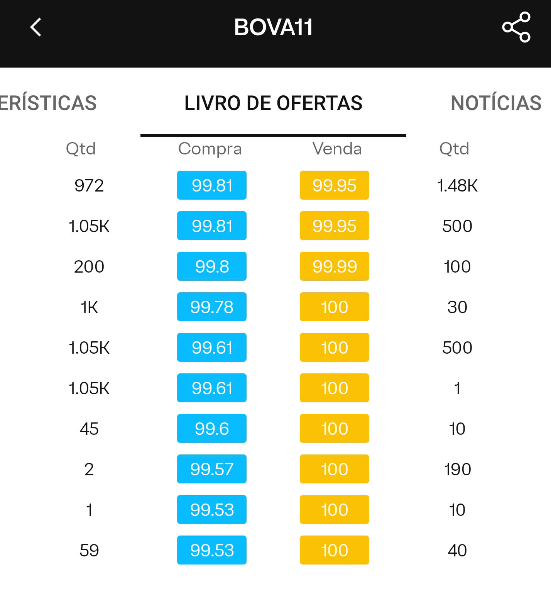

Do “como calcular?” ao “por que essa decisão ou contrato toma esta forma?”
Bibliografia: três camadas
Papel no curso
Referência
Eixo e motivação
Berk & DeMarzo, Corporate Finance (2024)
Apoio mais formal
Amaro de Matos, Theoretical Foundations of Corporate Finance (2001)
Informação, incentivos e contratos
Tirole, The Theory of Corporate Finance (2006)
Leituras complementares serão indicadas no e-class conforme o avanço dos tópicos.
Como vamos trabalhar
Exposição → discussão → resolução de problemas
Exemplos reais ou estilizados
Excel e Python ocasionais
Leitura antes; exercícios e revisão depois
Slides são um guia, não substituem leitura e exercícios
Avaliações e regras operacionais
Janelas
A1: 19–26 de setembro
A2: 23–30 de novembro
AS: 5–12 de dezembro
Combinados
Presença mínima: 75%
Regras de consulta: antes de cada prova
Dispositivos em prova: só com autorização
Entregas e prazos: enunciado + e-class
Integridade, IA e atenção
Provas são individuais
Discussão conceitual não substitui resposta própria
Código, planilha e argumento entregues devem ser compreendidos
IA pode apoiar; autoria e validação continuam sendo suas
Dispositivos ficam guardados, salvo uso pedagógico anunciado
Mapa do curso
1 · Fundamentos
Demonstrativos
Valor do dinheiro
Títulos
2 · Decidir
Ações e projetos
VPL e TIR
Orçamento de capital
3 · Precificar risco
Portfólios
CAPM e CCAPM
SDF e não arbitragem
4 · Entender fricções
Estrutura de capital
Informação e incentivos
Dividendos
O fim do curso é flexível
Objetivo: chegar à política de dividendos com tempo para discussão
Ritmo variável pode alterar a profundidade dos últimos blocos
Se houver tempo: ofertas públicas, M&A, gestão de risco e opções reais
Da apresentação à matéria
Agora: por que existem firmas, quem decide por elas e onde seus títulos são negociados?
A pergunta central
Investir: quais projetos criam valor?
Financiar: dívida, ações ou recursos internos?
Operar: como administrar caixa, liquidez e risco?
Governar: quem decide e em nome de quem?
Foco: sociedades empresárias — principalmente S.A.s — vistas pela perspectiva do gerente financeiro.
A escala das S.A.s

Tech domina o topo; em laranja, a exceção: Saudi Aramco.
Fonte: Yahoo Finance, dados de 17/06/2026.
Distinção Principal
Diversos tipos de sociedades empresariais
Principais elementos que distinguem tipos de empresa:
Participação por quotas ou não; negociação de ações aberta ou não
Limitação de responsabilidade:
Responsabilidade do sócio pelas obrigações da firma é restrita por um limite — normalmente, o investimento inicial na firma
Responsabilidade Limitada
Gravura de Joseph Mulder: ’T Oost Indische Magazyn, en Scheeps-Timmer-Werf (1726). Acervo do Rijksmuseum, Amsterdã.
Origens históricas:
Séc. XV: monastérios e guildas com propriedade comum
Séc. XVI: sociedades por ações em grandes monopólios
1602: VOC (Companhia Holandesa das Índias Orientais) emite ações negociadas em Amsterdã
Séc. XIX: incorporação chega a firmas menores
Ideia central: limitar perdas ao capital investido permitiu financiar empreendimentos grandes e arriscados.
Tipos de Sociedades no Brasil
Regulado pelo Novo Código Civil [Lei 10.406/02]
Sociedades empresárias:
Sociedade em nome coletivo — pessoas físicas; responsabilidade solidária e ilimitada
Sociedade Limitada [Ltda.] — sócios respondem de forma limitada e proporcional às suas quotas, potencialmente desiguais, do capital social; forma mais comum; o contrato social determina os administradores
Sociedade Anônima ou por Ações [S.A.] — capital social dividido em ações; responsabilidade limitada ao valor de emissão das ações
Apple em 17/10/2025: 14,776 bilhões de ações em circulação
Na mesma data: 22.429 acionistas registrados (holders of record)
Investidores via bancos e corretoras não aparecem individualmente nesse total
Decisões têm de ser tomadas por gestores
Separação entre propriedade e controle
Fontes: Apple, Form 10-K 2025; SEC/FINRA, Holding Your Securities (2023).
A seta tracejada é o problema de agência: quem decide não é quem é dono.
Gerentes Financeiros
Três tarefas principais:
Decisões de investimento
Julgar custos e benefícios incertos de projetos
Exemplos: desenvolvimento de produtos, nova fábrica, aquisições
Decisões de financiamento
Como financiar investimentos: novas ações? Dívida bancária ou no mercado? Crédito comercial?
Gerenciar caixa, risco e liquidez
Garantir recursos líquidos para pagar obrigações diárias
Capital de giro: caixa, estoques, matérias-primas, crédito de/para clientes e fornecedores
Objetivos
Maximizar a riqueza dos acionistas ou o valor da firma?
E os credores?
E outros stakeholders: consumidores, empregados, fornecedores, sociedade (meio ambiente, inclusão)?
E a heterogeneidade dos acionistas?
Estrutura Típica
Funções financeiras em verde; contabilidade e tributos em bege.
Incentivos
Separação entre propriedade e gestão gera potenciais conflitos de interesse
A mitigação desses conflitos e a provisão de incentivos são preocupações centrais na prática e no estudo de Finanças Corporativas
Conflitos usuais (agência): esforço, tomada de risco, desvio de recursos, busca de prestígio
Veremos um pouco de cada um na segunda parte do curso
Desempenho da firma e seu valor de mercado: incentivos, trocas de CEOs, tomadas hostis
Mercado de Ações
S.A.s podem ter ações transacionadas em bolsas (capital aberto, public) ou apenas em negociações descentralizadas (capital fechado, private)
Investidores valorizam a possibilidade de comprar e vender papéis conforme suas necessidades e crenças
Capacidade de comprar/vender um ativo a preços competitivos imediatamente: liquidez
Mercado Primário vs. Secundário
Ibovespa vs. S&P 500

Mesma janela, moedas locais: a diferença de trajetória motiva risco, retorno e câmbio.
Fonte: Yahoo Finance, dados de 17/06/2026; retornos em moeda local, sem ajuste por câmbio ou inflação.
A popularização da bolsa no Brasil

De 1 milhão em 2019 (laranja) para 5,6 milhões no 1º trimestre de 2026.
Fonte: B3, boletins e divulgações de Pessoas Físicas; marcos de jul/2019, abr/2020, mar/2022, dez/2024, dez/2025 e mar/2026. “Renda variável” inclui ações, FIIs, ETFs e BDRs, entre outros produtos.
Bolsas: escala e consolidação

Fonte: WFE, Market Statistics, maio/2026; capitalização doméstica em março/2026.
Bolsas viraram grupos globais: negociação, clearing e dados
NYSE + Nasdaq-US: cerca de US$ 66 tri
Shanghai + Shenzhen + Hong Kong: cerca de US$ 22 tri
B3: US$ 1,0 tri — grande regional, pequena na escala global
Tamanho da bolsa não é tamanho da economia
Alguns Conceitos
Market Maker
Bid — Preço de Compra
Ask — Preço de Venda
Limit order book (livro de ofertas), mercados com leilão (auction market), mercados de balcão (over the counter)
Exemplo: Apple (Nasdaq)
Operação histórica NYSE vs. Nasdaq
B3

Livro de ofertas (BOVA11) na tela de uma corretora — melhor compra e melhor venda no topo.